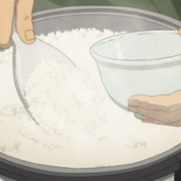

고양이 콧물
댓글
뇌가 저거보다 작을걸
뿅갈거같음
콧물이 아니라 기생충 뽑힌 거 아니냐 ㄷㄷ
ㅈㄴ 시원하겠다
이런건 뭐라고 검색해야 찾을수있는거냐
고양이 콧물
그건 왜..
cat snot removal
호다닥
축농증잇나?
이야 낙지 호롱이가 따로없네
아 ㅅㅂㅋㅋㅋ
그거 뇌임

꼬마 때부터 재채기 달고 사는 냥이가 있는데 걔도 저러려나
답답해서 여태 어케 살았냐?
먹어보구싶다
AI임?
저게 본체
유체이탈당했다

감기 걸렸을 때 붉닭볶음면 먹고 코로 들숨날숨 킁카킁카 하다 코 풀면 저런 왕건더기가 세면대에 붙어있음
진짜 개시원함
어제 그랬다.

뇌잖아...
고맙다고 인사하고 가야지 예의없는 쉑..
Ai지?
냥치즈
인격젤리
ㅈㄴ 개운하겠다
고양이도 부비동이 큰가봐
뇌 아님?
나이거 꿀알바에서 밧서
파스타 면 같네
햇반
응옷응오오옷
?? 저게 뭐야 무서워
와씨 저정도면 뇌가 딸려나오는 기분일듯